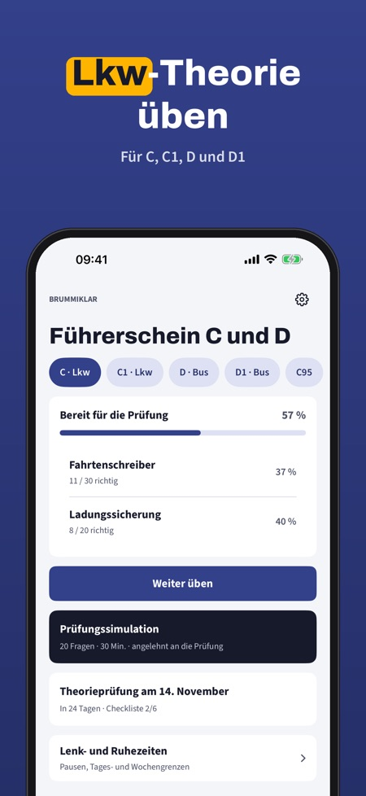
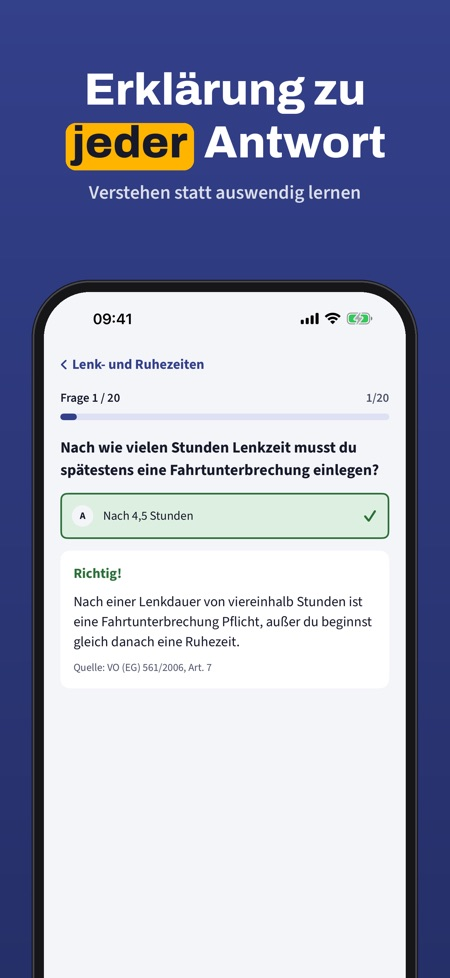
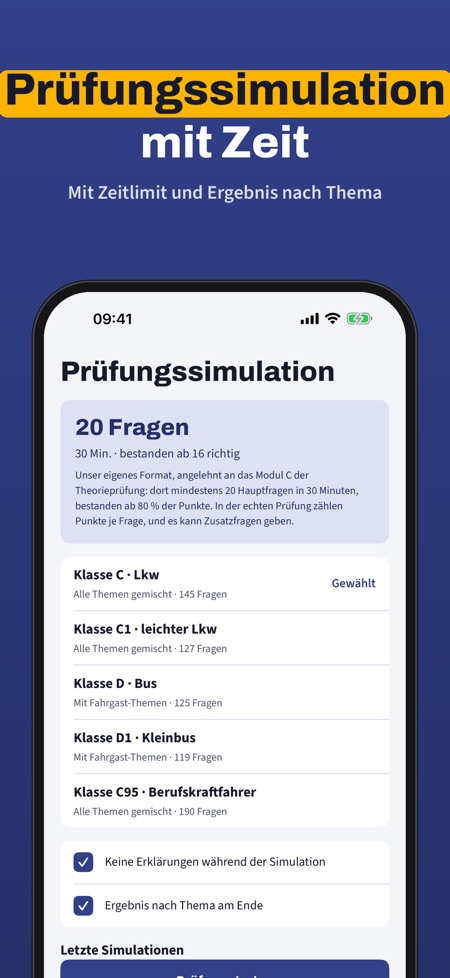

Brummiklar hilft dir, die Theorie für die Klassen C, C1, D und D1 in Österreich zu üben, mit Fragen nach Themen und dem Grundwissen für C95. Zu jeder Antwort gibt es eine Erklärung.



Für die Klassen C, C1, D und D1 in Österreich, dazu das Grundwissen für C95.
Nein, Brummiklar enthält eigene Fragen und ist nicht mit Behörden verbunden. Die Prüfung legst du über die Fahrschule ab.
Ja, mit Zeit und angelehnt an das Prüfungsformat.
Ja, Pausen sowie Tages- und Wochengrenzen im Überblick.
Ja, ohne Internet.
Nein, die Vollversion ist ein Einmalkauf und schaltet alle Fragen, Simulationen und die Statistik frei.
20 Fragen, die Begriffe und die Checkliste kannst du ohne Kauf nutzen.
Brummiklar hilft dir, die Theorie für die Klassen C, C1, D und D1 in Österreich zu üben – mit eigenen Fragen nach Themen und dem Grundwissen für C95.
20 Fragen, die Begriffe und die Checkliste kannst du ohne Kauf nutzen. Die Vollversion ist ein Einmalkauf und schaltet alle Fragen, Simulationen und die Statistik frei. Kein Abo.
Brummiklar ist unabhängig, nicht mit Behörden verbunden und enthält nicht den amtlichen Fragenkatalog. Die Prüfung legst du über die Fahrschule ab.